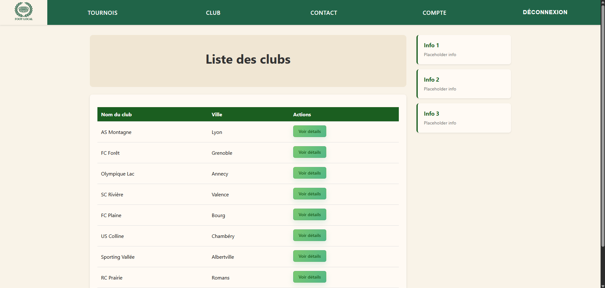
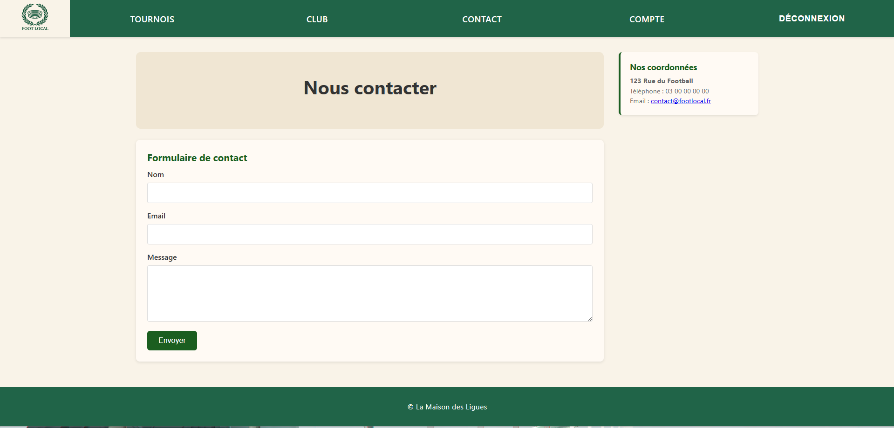
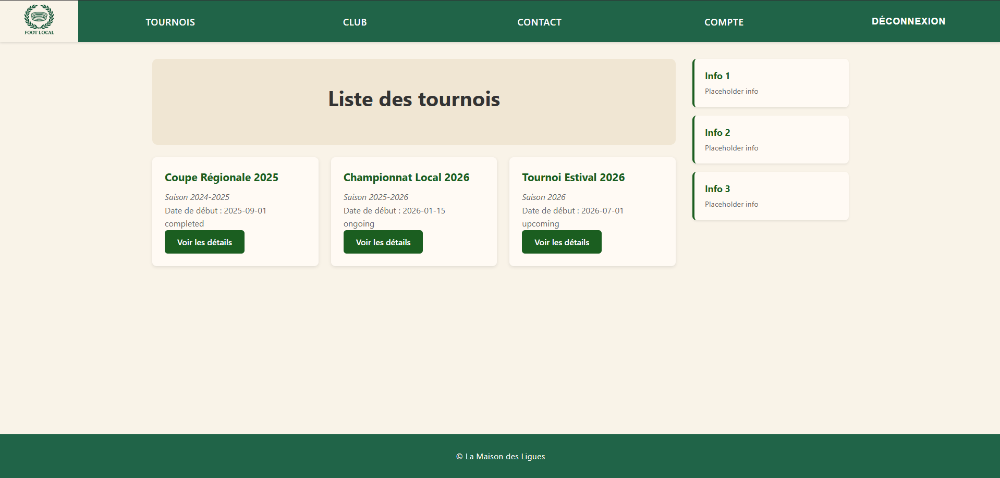

Aperçu du projet
Foot-Local est un système de gestion de clubs de football complet.



Foot-Local est un système de gestion de clubs de football complet.



Foot-Local permet de gérer les clubs, les joueurs, les matches et les tournois via une API REST sécurisée. Le backend utilise Symfony 7.x, SQLite et LexikJWTAuthenticationBundle pour l'authentification JWT.
Le frontend React 18, construit avec Vite, propose une interface moderne pour la consultation des clubs, la gestion des favoris et la navigation entre les matchs et les tournois.
Le projet illustre la connexion entre une API Symfony et une application React, avec des fonctionnalités de login, d'inscription, de favoris et de consultation sécurisée des données.
Pour ce projet, nous avons adopté une approche agile, en organisant le travail en sprints courts et itératifs. La gestion des tâches, le suivi des fonctionnalités et la collaboration ont été centralisés sur un tableau Trello.
Cette méthode nous a permis de maintenir une vision claire de l'avancement, de prioriser les développements et d'assurer une communication fluide au sein de l'équipe.
Voir le tableau Trello